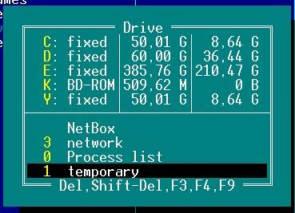

Временная панель — очень часто нужно найти файлы (ALT+F7) по определенному критерию: имени файла или содержимому. Когда они найдены, можно сохранить результаты поиска во временную панель и потом произвести групповую операцию с файлами. Добавить файлы во временную панель можно обычным копированием, открыв окно выбора диска ALT+F1/F2 и нажать 1 (на самом деле они не копируются, а просто добавляются на нее).
